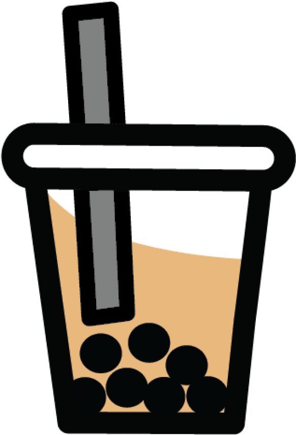

How to minimize the impact of single-use plastic usage of regular in-store bubble tea consumers at locally owned boba stores in the greater Seattle Area?
Watch our video below to see if we found an answer.
Bubble Tea has a global market size of $2.5bn, and this is projected to double by 2028. In the Seattle area alone, there are over 60 Bubble Tea stores, serving between 150 and 500 servings daily. This means between 10,000 and 34,000 plastic cups are being used daily for Bubble Tea in the Seattle Area.
Due to unique packaging challenges specific to the Bubble Tea experience, such as large straws to suck up the pearls, or a high emphasis on packaging aesthetics, simple solutions to reduce the usage of single-use plastics that work for coffee stores or other food and beverage competitors are not easily transferable to Bubble Tea. This has resulted in inadequate solutions to the high consumption of single-use plastics in the Bubble Tea industry, which the Boba Busters addressed in this project.
{kind=link}